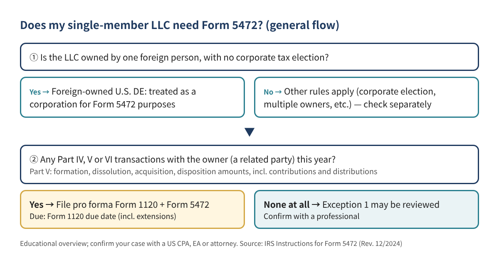
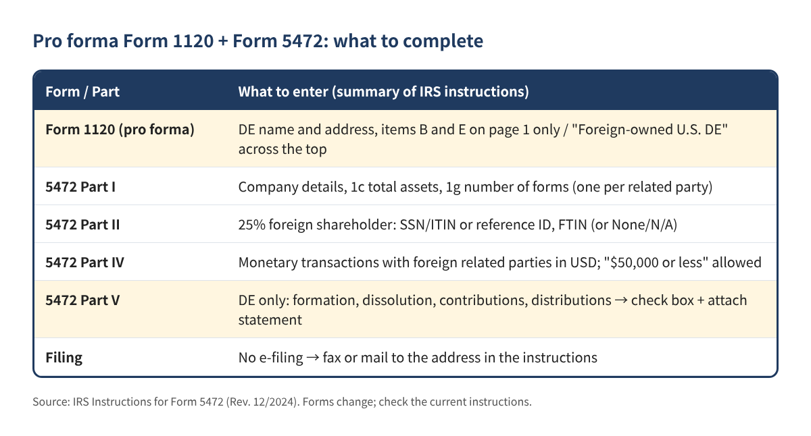
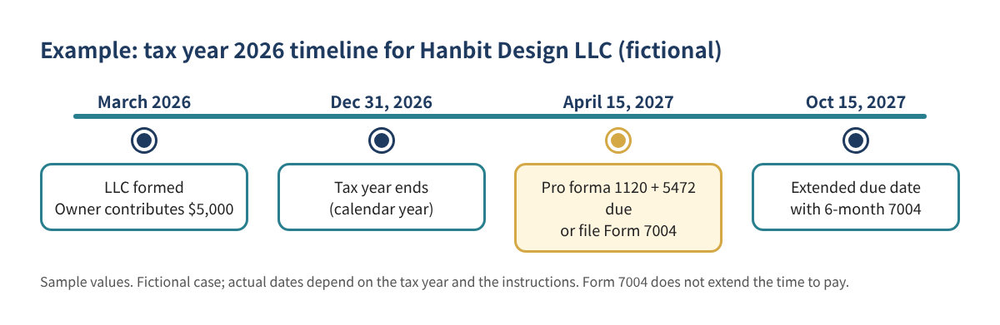

Form 5472 for a Foreign-Owned Single-Member LLC: The Pro Forma 1120 You May Owe Even With No Income
For non-US founders who own a single-member US LLC, Form 5472 is a filing that is easy to overlook. Even if the company had no sales and owes no US income tax, money that moved between the owner and the LLC during formation can create a filing requirement. Under the IRS instructions, the penalty for not filing on time starts at $25,000 per failure. This guide walks through who files, what to file, when, and where, based on the official IRS instructions.
This is general educational information, not tax, legal or financial advice. Confirm your own situation with a qualified professional.
Who this is for
· Non-US residents who are the sole owner of a US LLC
· LLCs that have not elected corporate tax treatment and are therefore disregarded entities
· Owners who think there is "nothing to file" because the LLC has little or no revenue
· Family members, friends or staff who help run such a company
1. What Form 5472 is and why it reaches a single-member LLC
Form 5472 is the "Information Return of a 25% Foreign-Owned U.S. Corporation or a Foreign Corporation Engaged in a U.S. Trade or Business." It is an information return that tells the IRS about transactions with foreign or domestic related parties.
The IRS treats a domestic disregarded entity wholly owned by one foreign person as a corporation for the limited purposes of this reporting. The Form 5472 instructions say this applies to tax years beginning on or after January 1, 2017, and ending on or after December 13, 2017. So an LLC that is ignored for income tax can still be a "reporting corporation" for this return.
According to the IRS page on single-member LLCs, a single-member LLC is a disregarded entity by default unless it files Form 8832 and elects to be treated as a corporation. This guide assumes that default. If the LLC elected corporate treatment, different rules (including a full Form 1120) apply and should be confirmed separately.
Key terms
| Term | Meaning (summary of the IRS instructions) |
|---|---|
| Foreign-owned U.S. DE | A domestic disregarded entity wholly owned by one foreign person |
| Pro forma Form 1120 | A Form 1120 filed only to carry Form 5472, with no tax computation |
| Reportable transaction | A transaction with a related party of the types in Parts IV, V or VI |
| Part V | DE-only: amounts for formation, dissolution, acquisition, disposition, incl. contributions and distributions |
| Reference ID | An identifier for an owner with no US taxpayer number (alphanumeric, up to 50 characters) |
2. Deciding whether you must file
The Form 5472 instructions list several exceptions, but most do not help a foreign-owned DE. The instructions state that Exceptions 2, 3 and 6 do not apply to foreign-owned U.S. DEs. Exception 1 (no reportable transactions) applies only if the DE had no Part IV or VI transactions and no Part V transactions.
Part V covers amounts paid or received for the entity's formation, dissolution, acquisition or disposition, including contributions to and distributions from the entity. So if the owner put money into the LLC for formation or start-up costs, there is generally a reportable transaction even with zero revenue.

| Situation (Sample values) | Could it be a Part V transaction? |
|---|---|
| Owner wires formation money to the LLC account | May be a contribution |
| LLC sends money back to the owner | May be a distribution |
| Amounts tied to dissolving or selling the LLC | May be dissolution or disposition |
| No money moved at all after formation | Exception 1 may be reviewed (confirm with a professional) |
Which Part a specific transaction belongs to depends on the facts. When in doubt, confirm with a US CPA or EA.
3. What to file: pro forma Form 1120 + Form 5472
A foreign-owned DE does not send Form 5472 by itself. It files a pro forma Form 1120 with Form 5472 attached. Per the instructions, the only Form 1120 entries required are the DE's name and address and items B and E on page 1, and "Foreign-owned U.S. DE" must be written across the top of Form 1120.

Step by step
- Confirm the LLC's EIN: the DE files under its own name and EIN. The Form SS-4 instructions tell a foreign-owned DE requesting an EIN to file Form 5472 to check "Other" on line 9a and write "Foreign-owned U.S. disregarded entity-Form 5472." See EIN for nonresident LLC owners.
- Set the tax year: per the instructions, it matches the owner's US filing year, or the calendar year if the owner has none.
- Form 1120 page 1: name, address, items B and E only, with "Foreign-owned U.S. DE" across the top.
- Form 5472 Part I: company details, total assets on line 1c, and on line 1g the total number of Forms 5472 filed for the year (one per related party).
- Part II (25% foreign shareholder): enter a US identifying number (SSN or ITIN) if any; otherwise a reference ID. A foreign-owned DE enters the foreign taxpayer identification number (FTIN) if any, or "None" or "N/A."
- Part IV (monetary transactions): report transactions with foreign related parties in US dollars. A transaction or series of transactions with a foreign related party that does not exceed $50,000 may be reported as "$50,000 or less," and a reasonable estimate is within 75% to 125% of the actual amount.
- Part V (DE only): check the box for formation, contribution, distribution and similar transactions not reported in Part IV, and attach a statement describing them.
- Keep records: maintain books and records sufficient to support the return, including related-party transaction records.
4. When and where to file
Form 5472 is due with Form 1120, including extensions. Under the Form 1120 instructions, the return is generally due on the 15th day of the 4th month after the tax year ends, which is April 15 for a calendar year. If the due date falls on a Saturday, Sunday or legal holiday, you may file on the next business day.
To extend, file Form 7004 by the regular due date. The Form 7004 instructions say the automatic extension for Form 1120 is generally 6 months and that Form 7004 does not extend the time to pay any tax due. Under the Form 5472 instructions, a foreign-owned DE enters the Form 1120 code on Form 7004, Part I, line 1, and writes "Foreign-owned U.S. DE" across the top.
| Item | What the IRS instructions say |
|---|---|
| E-filing | Foreign-owned U.S. DEs cannot e-file Form 5472 |
| Fax | 855-887-7737 (300 DPI or higher) |
| Internal Revenue Service, 1973 Rulon White Blvd, M/S 6112, Attn: PIN Unit, Ogden, UT 84201 | |
| Note | Do not use the regular Form 1120 address. Send Form 7004 to the same fax or address |
Fax numbers and addresses can change, so re-check the current Form 5472 instructions right before you file.
5. Penalties: $25,000 per failure
Under the Form 5472 instructions, failing to file Form 5472 when due and in the required manner, or failing to maintain the required records, carries a penalty of $25,000. A substantially incomplete form is treated as a failure to file.
If the failure continues more than 90 days after the IRS notifies you, an additional $25,000 applies for each related party for each 30-day period (or part of one). The instructions state no maximum. They also mention that criminal penalties under sections 7203, 7206 and 7207 may apply.
| Situation (Sample values) | Penalty structure in the instructions |
|---|---|
| Not filed on time, or records not kept | $25,000 |
| Substantially incomplete form | Treated as a failure to file |
| Still unresolved 90 days after IRS notice | Additional $25,000 per related party per 30 days |
6. Worked example: "Hanbit Design LLC" (fictional)
This is an invented example (Sample values). Minseo Kim (fictional), who lives in Seoul, formed a single-member US LLC, "Hanbit Design LLC," in March 2026. No corporate election was made, and the LLC had no sales in 2026.
- March: the owner wires $5,000 to the LLC account for formation and start-up costs → a contribution (may be Part V)
- June–December: the LLC pays software subscriptions from its own account
- December: nothing is paid back to the owner
There is no revenue, but the owner's contribution is a Part V transaction, so Exception 1 generally does not apply. If the owner has no US filing year, the tax year is the calendar year, and the 2026 pro forma Form 1120 + Form 5472 is due April 15, 2027. If more time is needed, Form 7004 filed by that date gives a 6-month extension.

7. Common mistakes
- Assuming "no revenue, nothing to file" — contributions and distributions can be Part V transactions.
- Trying to e-file Form 5472 — foreign-owned DEs cannot e-file it.
- Mailing to the regular Form 1120 address — the instructions give a separate fax and address.
- Leaving off "Foreign-owned U.S. DE" at the top of Form 1120.
- Thinking Form 7004 postpones everything — it does not extend the time to pay.
- Not keeping bank statements and transfer records — failing to keep records is itself a penalty trigger.
Korea-side obligations (for Korean residents)
If you live in Korea and own a US company or US account, Korea may also require filings, such as overseas direct investment reporting under foreign-exchange rules, overseas financial account reporting, and overseas subsidiary information submitted to the National Tax Service. Who must file, thresholds and deadlines depend on your facts and the year, so confirm with a Korean tax professional (세무사) or your bank.
8. Note: FinCEN beneficial ownership (BOI) reporting today
FinCEN's current page (posted August 11, 2026) says FinCEN finalized a rule making permanent the exemptions from its March 2025 interim final rule, effective August 14, 2026. It states that companies created in the United States are exempt from BOI reporting and that reporting companies are now limited to entities formed under foreign law that have registered to do business in a US state. This concerns FinCEN only; it does not change the IRS Form 5472 requirement, and bank customer due diligence (KYC) still applies.
9. FAQ
Q1. Do I file Form 1120 even if the LLC owes no US income tax?
For a foreign-owned DE, the Form 1120 is a pro forma form used to carry Form 5472, not a tax computation. If there were reportable transactions, a pro forma Form 1120 + Form 5472 is generally required.
Q2. What if the owner has no SSN or ITIN?
Per the instructions, enter a reference ID (alphanumeric, no spaces or special characters, up to 50 characters) and use the same one every year. A foreign-owned DE also enters the owner's FTIN if any, or "None" or "N/A."
Q3. What if the deadline has already passed?
The instructions set a $25,000 penalty for late filing. Prepare an accurate return as soon as possible and discuss any penalty relief options with a US CPA, EA or tax attorney.
Q4. Does this filing cover the owner's own US income tax?
No. Form 5472 is an information return, not a tax computation. Whether the owner has any separate US filing requirement depends on the LLC's activities; confirm with a US CPA or EA.
Q5. Does this apply if the LLC has no bank account yet?
The question is whether money moved between the owner and the LLC, not whether an account exists. For example, an owner paying formation costs for the LLC should be reviewed. For accounts, see US business bank accounts for nonresidents.
10. Checklist
- ☐ Confirm the LLC is a single-member, foreign-owned DE with no corporate election
- ☐ Confirm the LLC's name, address and EIN
- ☐ Confirm the tax year (calendar year if the owner has no US filing year)
- ☐ List contributions, distributions, loans and other owner transactions
- ☐ Prepare the owner's SSN/ITIN or reference ID, and FTIN
- ☐ Write "Foreign-owned U.S. DE" across the top of the pro forma Form 1120
- ☐ Attach a Part V statement if applicable
- ☐ Check the due date; file Form 7004 if an extension is needed
- ☐ Fax or mail to the address in the instructions and keep proof of filing
- ☐ Korean residents: confirm Korea-side filings with a Korean tax professional or bank
For the overall formation process, see US LLC guide for Korean nonresidents.
This article is general educational information and is not tax, legal or financial advice. Tax rules, forms, fees, filing methods and agency policies change, and results depend on individual facts. Before filing, check official sources such as the IRS directly and consult a US CPA, EA or attorney, and for Korea-side matters a Korean tax professional.
Sources
- IRS, Instructions for Form 5472 (Rev. 12/2024) — checked 2026-11-23 · 확인일 2026-11-23
- IRS, About Form 5472 — checked 2026-11-23 · 확인일 2026-11-23
- IRS, Instructions for Form 1120 (2025) — checked 2026-11-23 · 확인일 2026-11-23
- IRS, Instructions for Form 7004 (Rev. 12/2025) — checked 2026-11-23 · 확인일 2026-11-23
- IRS, Instructions for Form SS-4 (Rev. 12/2025) — checked 2026-11-23 · 확인일 2026-11-23
- IRS, Single Member Limited Liability Companies — checked 2026-11-23 · 확인일 2026-11-23
- FinCEN, Beneficial Ownership Information Reporting — checked 2026-11-23 · 확인일 2026-11-23